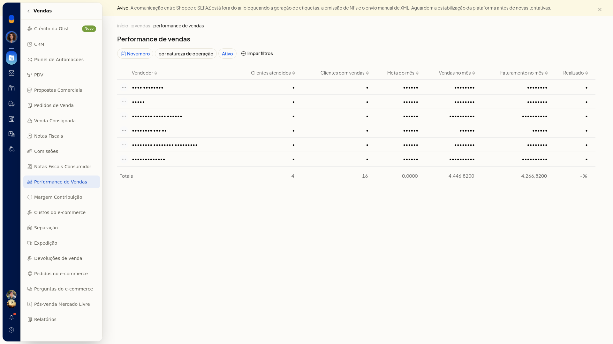

Performance de vendas
No ERP da Olist, Performance de Vendas mostra o resultado das vendas do período, agrupado por natureza e com a situação Ativo. Você acompanha esse resultado e pode abrir Meta de vendas e Filtros sem gravar alteração.
Instruções
-
Acesse Vendas > Performance de Vendas.
-
Confira o acompanhamento do período, agrupado por natureza, com a situação Ativo.

-
Clique em Meta de vendas.
-
Informe um valor, se quiser, e clique em Cancelar. A meta não é salva.
-
Clique em Filtros e depois em Cancelar. Os filtros não são aplicados.
Resultado
A tela de Performance de Vendas continua com o acompanhamento do período, sem meta salva e sem filtros aplicados.